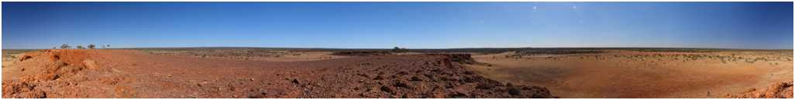

Collecting and Creating Digital Assets for the
SKA Radio Telescope Project, Boolardy
OzViz Conference
Photography: Peter Morse
A joint WASP / Communication Studies / Physics project of the University of Western Australia
SAPAC, Adelaide, September 2007
Abstract:
I will describe some of the digital assets being acquired for the SKA (radio telescope)
project. This includes photographic recording of the site (both monoscopic and stereoscopic),
stereoscopic panoramic pairs,
models of the telescope, rapid prototyping, and animations of the site.
PDF:
ozviz2007.pdf (Without the animations or live demonstration)

|